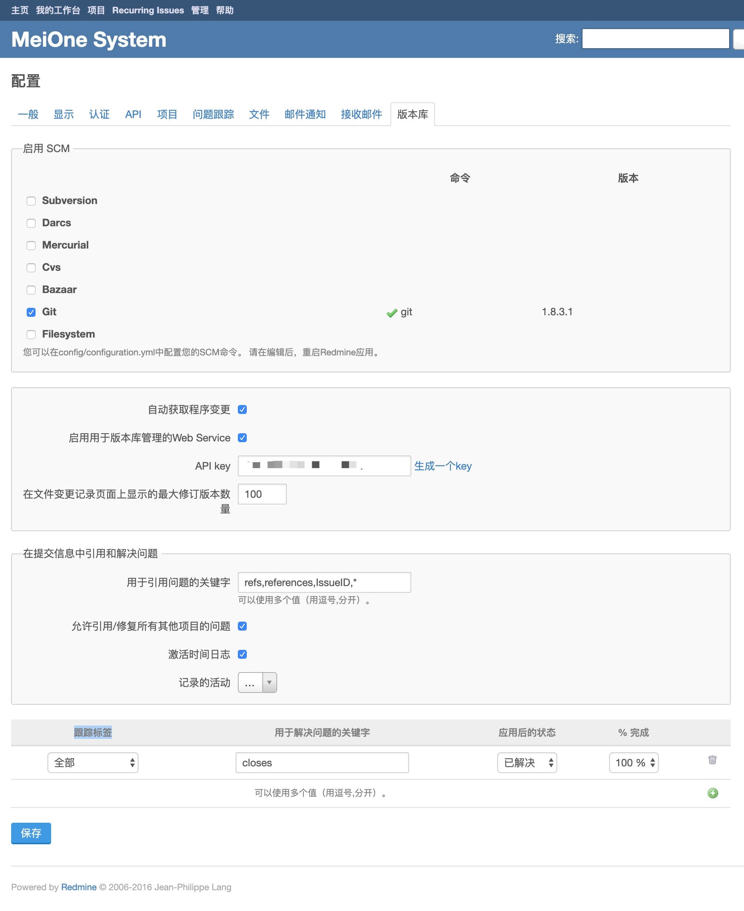
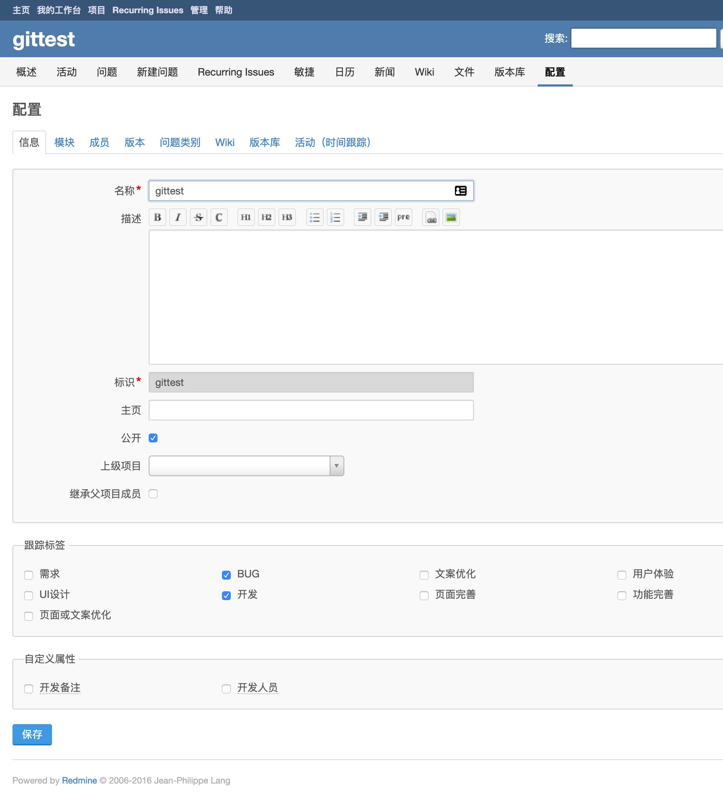
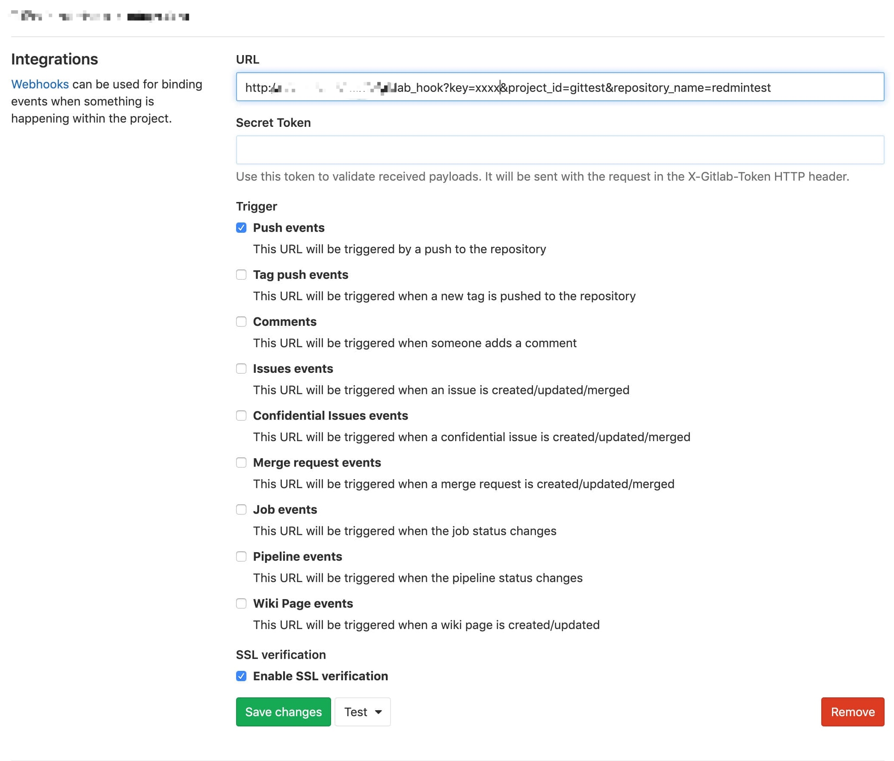
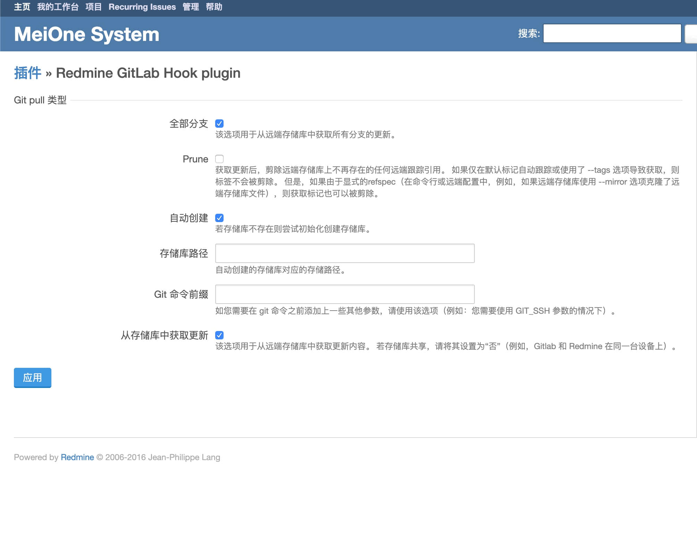
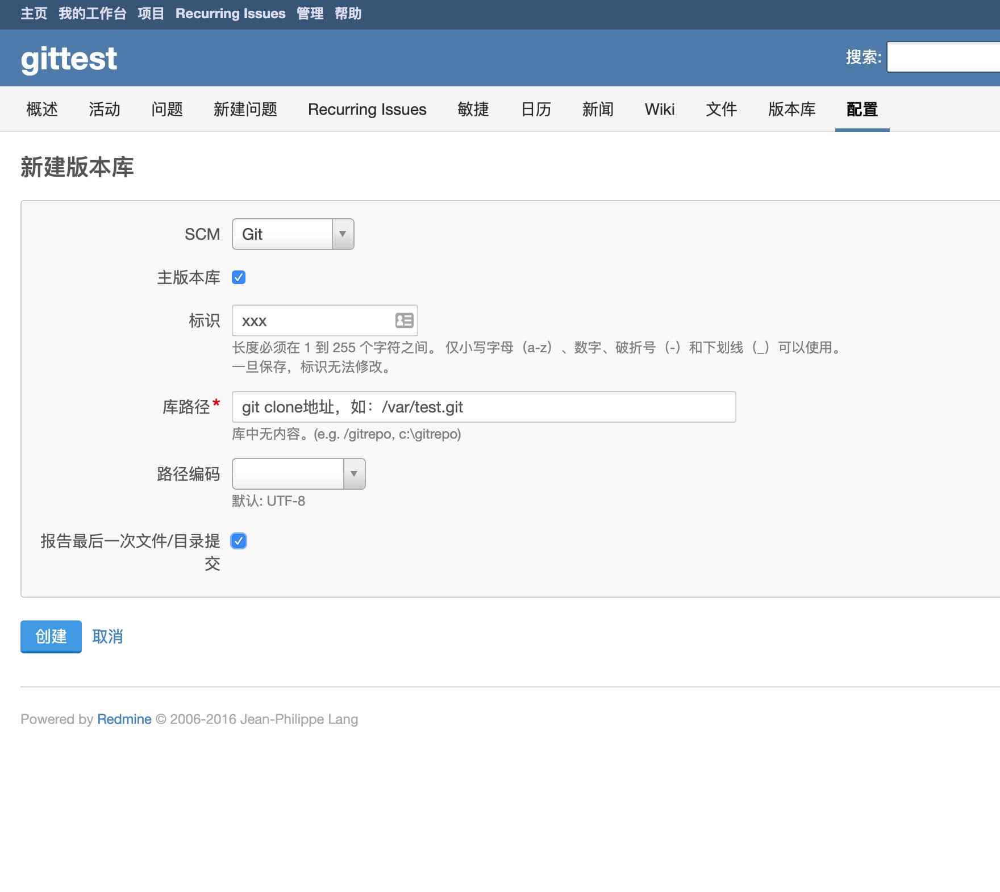
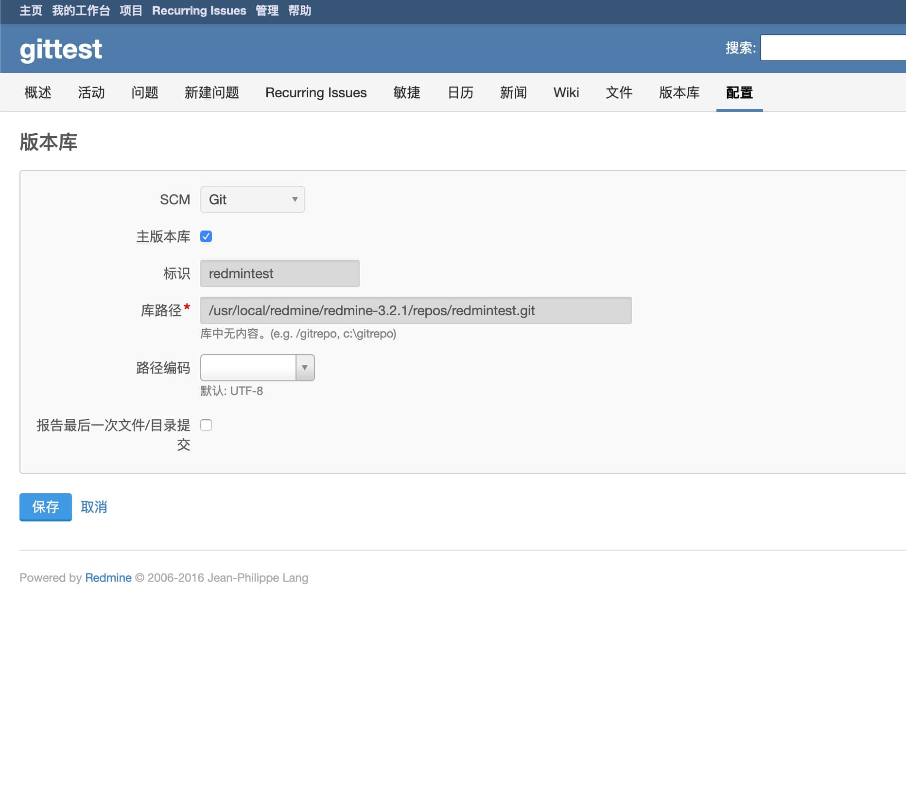

1. 安装redmine_gitlab_hook
- 下载：https://github.com/phlegx/redmine_gitlab_hook/releases
- 解压后文件夹名字修改为redmine_gitlab_hook
- 放到redmine安装目录的plugins文件夹下
- 重启redmine
2. 插件设置
- 打开redmine的管理 - 配置 - 版本库
- 选择SCM - git
- 勾选自动获取程序变更、启用用于版本库管理的Web Service
- 点击生成一个key
- 修改用于引用问题的关键字添加*号（用于捕获所有提交内容）：
refs,references,IssueID,* - 跟踪标签可以设置关键字对应的状态和进度
- 提交记录格式说明 https://www.redmine.org/projects/redmine/wiki/RedmineSettings#Referencing-issues-in-commit-messages
3. 项目设置
git clone --mirror git@xxx/xxx.git到redmine服务器文件夹- 打开redmine项目配置 - 版本库 - 新建版本库
- 勾选主板本库，库路径为git clone文件夹
- git项目settings/integrations添加webhook，url：
{redmine地址}/gitlab_hook?key={生成的key}&project_id={redmine项目标识}&repository_name={redmine版本库标识}
  
  
Comments !